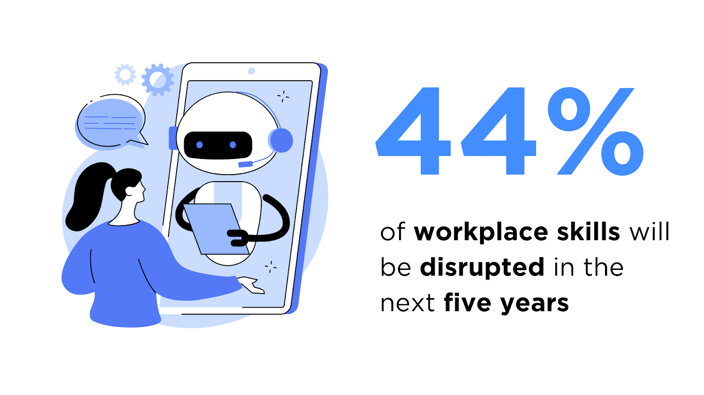
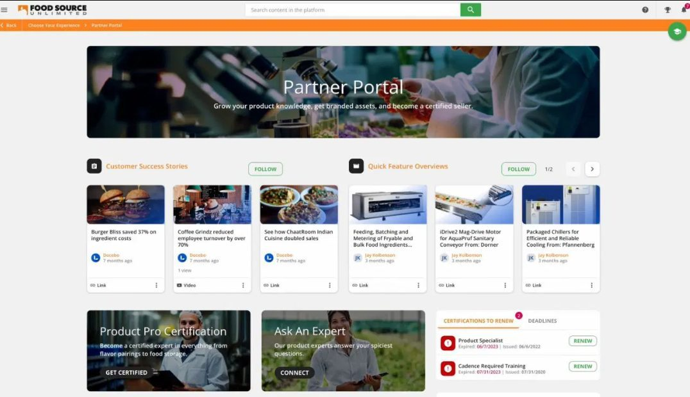

Что такое система управления обучением (LMS), примеры и типы в 2026 году

Подробное руководство по выбору и внедрению подходящей LMS для вашей организации.
В наши дни потребность в обучении очень высока. Согласно отчету Всемирного экономического форума, 44% рабочих навыков будут затронуты в течение следующих пяти лет. Именно поэтому 21% предприятий считают, что устранение пробелов в навыках является приоритетной задачей для бизнеса.
Учитывая огромное количество обучения, которое необходимо предоставить — сотрудникам, клиентам и партнерам — компаниям необходимо структурированный способ проведения своих образовательных программ.
Представляем Системы управления обучением (LMS)…
Наше руководство по Системе управления обучением охватывает основные моменты, которые необходимо знать, прежде чем инвестировать в LMS.
Что такое Система управления обучением?
Система управления обучением (LMS) — это программная платформа, предназначенная для создания, доставки и управления образовательными или учебными программами. Она широко используется в школах, университетах, предприятиях, медицинских учреждениях и государственных организациях для оптимизации процессов обучения.
Система управления обучением (LMS) позволяет преподавателям или администраторам разрабатывать контент, отслеживать прогресс учащихся и оценивать результаты обучения с помощью таких инструментов, как конструкторы курсов, тесты и функции отчетности.
Независимо от того, используется ли LMS для масштабного обучения или обучения небольшим группам, платформы LMS предоставляют экономичный способ предоставления увлекательных, гибких и масштабируемых образовательных возможностей.
Как может выглядеть LMS:

Преимущества использования LMS
Предлагая полный способ управления и предоставления обучения, LMS значительно сокращает время, затрачиваемое на создание, предоставление и мониторинг курсов, по сравнению с традиционными методами.
Использование LMS для обучения и образовательных программ вашей организации предоставляет многочисленные преимущества.
Преимущества LMS для администраторов
- Снижение затрат на обучение и развитие: Экономит средства, связанные с очным обучением, такие как оплата инструкторов, аренда помещений и транспорт.
- Непрерывный мониторинг прогресса обучения: Обеспечивает отслеживание прогресса учащихся и эффективности обучения в режиме реального времени с помощью аналитики.
- Сокращение времени обучения и адаптации: Оптимизирует процесс обучения, позволяя учащимся получать доступ к материалам в любое время, сокращая общее время обучения.
- Постоянное соблюдение требований: Помогает поддерживать соответствие требованиям, отслеживая завершение и сертификацию обучения по требованиям.
- Отслеживание результатов обучения в отношении производительности организации: Измеряет результаты обучения и их влияние на производительность организации.
Преимущества LMS для учащихся
- Улучшение запоминания: Позволяет учащимся многократно просматривать материалы, улучшая запоминание.
- Приобретение навыков и знаний: Предоставляет доступ к большему количеству возможностей обучения, помогая устранить пробелы в навыках.
- Улучшение производительности: Предлагает персонализированные рекомендации на основе выявленных пробелов в навыках, улучшая производительность.
- Повышение удовлетворенности: Создает динамичную среду обучения, повышая удовлетворенность и вовлеченность сотрудников.
Распространенные варианты использования LMS
Для чего используется LMS? LMS — это универсальные программные приложения. Высшие учебные заведения, некоммерческие организации и предприятия используют их для различных целей. Вот наиболее распространенные варианты использования LMS:
1. Обучение клиентов
Система управления обучением (LMS) позволяет вам обучать новых клиентов вашему продукту или услуге, предлагая учебные материалы и курсы в доступной и увлекательной онлайн-форме. Вы можете отслеживать рентабельность инвестиций (ROI) благодаря встроенным отчетам и аналитике.
2. Обучение партнеров
Система управления обучением позволяет вам создавать и распространять знания о продукте и учебные материалы среди дистрибьюторов, франчайзи или других партнеров, обеспечивая их необходимыми знаниями для представления вашего бренда.
3. Обучение членов
Профессиональные ассоциации используют системы управления обучением для обучения членов, чтобы повысить вовлеченность и способствовать непрерывному обучению через современные образовательные возможности.
4. Обучение новых сотрудников
Система управления обучением упрощает процесс адаптации новых сотрудников, предоставляя им всю необходимую информацию онлайн, позволяя им учиться в своем темпе.
5. Развитие и удержание сотрудников
Система управления обучением предоставляет сотрудникам возможности для карьерного роста, помогая устранить пробелы в знаниях и повысить вовлеченность и удержание.
6. Поддержка отдела продаж
Система управления обучением быстро и эффективно предоставляет вашему отделу продаж актуальные знания о продукте и учебные материалы.
7. Обучение требованиям
Система управления обучением помогает вам соблюдать требования, отслеживая и управляя обучением требованиям, сертификатами и переподготовкой, обеспечивая аудит.
8. Обучение ассоциаций и членов
Профессиональные ассоциации используют платформы LMS для предоставления непрерывного образования, отслеживания требований к сертификации и получения дохода за счет образовательных программ, ориентированных на членов, которые интегрируются с существующими системами управления ассоциациями.
9. Координация обучения в нескольких местах
Организации с распределенными командами используют платформы LMS для координации обучения в нескольких местах, назначения учебных путей, специфичных для конкретного места, и обеспечения централизованного контроля, при этом позволяя местному управлению.
Как выбрать лучшее программное обеспечение LMS
Современное программное обеспечение LMS содержит множество функций для создания эффективных учебных опытов.
Вот 15 ключевых функций, которые следует учитывать при выборе LMS
- Интуитивно понятный пользовательский интерфейс (UI): Обеспечивает простоту использования, повышая вовлеченность.
- Доступность: Предоставляет контент в различных форматах для удовлетворения различных стилей обучения.
- Автоматизация: Снижает административные задачи за счет автоматизации.
- Централизация системы: Централизует все курсы обучения на одной платформе.
- Искусственный интеллект (AI): Обеспечивает персонализированный опыт обучения.
- Отслеживание и управление контентом: Эффективно управляет созданием курсов, сертификатами и переподготовкой.
- Локализация: Поддерживает несколько языков и глобальные платежные шлюзы.
- Интеграция и совместимость: Соответствует стандартам, таким как SCORM, AICC и xAPI.
- Обучение на мобильных устройствах: Предоставляет доступ к обучению на мобильных устройствах.
- Интеграция с платформой: Интегрируется с другими инструментами и платформами.
- Геймификация: Включает игровые элементы для повышения вовлеченности.
- Рынок контента: Предоставляет доступ к различным курсам и материалам.
- Отчеты и аналитика: Предоставляет настраиваемые отчеты и панели управления.
- Поддержка: Обеспечивает надежную, постоянную поддержку и обновления.
- Масштабируемость**: Эффективно справляется с ростом и различными сценариями использования.
- Возможности социального обучения: Поддерживает обучение «один к одному» посредством форумов обсуждений, инструментов для совместной работы и функций сообщества.
- Поддержка нескольких локаций: Управляет координацией обучения в нескольких местах.
Признаки, на которые следует обратить внимание при выборе LMS платформы
- Ограниченные возможности интеграции
- Плохой пользовательский опыт на мобильных устройствах
- Слабые функции безопасности
- Ограниченные возможности отчетности
- Плохая поддержка клиентов
- Скрытые затраты
- Сложный пользовательский интерфейс
Ключевые особенности LMS
- Управление контентом: LMS позволяет создавать, хранить и организовывать учебные материалы, что облегчает преподавателям предоставление контента и позволяет учащимся получать к нему доступ из централизованного места.
- Управление пользователями: Администраторы могут управлять регистрацией пользователей, ролями и разрешениями, обеспечивая структурированную среду обучения, в которой преподаватели и учащиеся могут беспрепятственно взаимодействовать.
- Отслеживание и отчетность: Платформы LMS предоставляют инструменты аналитики, которые отслеживают прогресс учащихся, показатели завершения, результаты тестов и другие метрики, позволяя организациям оценивать эффективность своих программ обучения.
- Предоставление курсов: LMS поддерживают различные формы предоставления контента, включая видеолекции, тесты, задания и форумы для обсуждения. Эта гибкость улучшает процесс обучения, учитывая различные стили обучения.
- Доступность: Большинство современных LMS являются облачными, что означает, что они могут быть доступны с любого устройства с подключением к Интернету. Эта функция имеет решающее значение для дистанционного обучения и обеспечивает возможность участия учащихся из любой точки мира.
Типы систем управления обучением
- LMS на основе облака:
LMS на основе облака размещается на удаленных серверах и доступен через интернет, предлагая простоту использования, масштабируемость и доступность в любое время и в любом месте. Эти системы устраняют необходимость в локальной инфраструктуре и идеально подходят для организаций, которые ищут быстрое, простое в обслуживании решение с автоматическими обновлениями и высокой гибкостью. - LMS, размещенные самостоятельно:
LMS, размещенные самостоятельно, устанавливаются и управляются на серверах организации. Этот тип обеспечивает полный контроль над настройками, хранением данных и безопасностью. Хотя они предлагают повышенную гибкость, решения, размещенные самостоятельно, требуют значительных технических знаний и ресурсов для обслуживания и обновлений. - Open-Source LMS:
Платформы Open-Source LMS бесплатны в использовании и полностью настраиваемые, позволяя организациям адаптировать программное обеспечение к своим уникальным потребностям. Имея доступ к исходному коду, пользователи могут добавлять функции, интегрировать сторонние инструменты и изменять функциональность, хотя для настройки и кастомизации часто требуются технические знания. - Корпоративный LMS:
Платформы корпоративного LMS, также известные как enterprise LMS, специально разработаны для обучения, развития и обеспечения соответствия требованиям сотрудников. Эти системы часто включают такие функции, как отслеживание сертификации, аналитика и интеграция с программным обеспечением для управления персоналом, что делает их идеальными для отраслей, которым требуется последовательное обучение больших команд или в различных местах. - Академический LMS:
Решения академического LMS предназначены для образовательных учреждений, поддерживают школы K-12, колледжи и университеты. Эти платформы делают акцент на таких функциях, как планирование курсов, оценка студентов, электронные журналы и инструменты для совместного обучения, чтобы облегчить обучение.
6 лучших отраслей, использующих платформы LMS
- Программное обеспечение и технологии
- Платформы LMS помогают технологическим компаниям обучать сотрудников новым инструментам, обновлениям программного обеспечения и сертификации, а также поддерживать удаленные команды за счет предоставления ресурсов по запросу.
- Производство
- Производители используют платформы LMS для обучения безопасности, инструкций по эксплуатации оборудования и стандартизации процессов на предприятиях.
- Финансовые услуги
- Банки и финансовые компании полагаются на платформы LMS для обучения требованиям, сертификации и обучения персонала новым финансовым продуктам и нормативным требованиям.
- Здравоохранение
- Платформы LMS поддерживают клиническое обучение, обучение требованиям, сертификацию, а также помогают медицинским учреждениям быть в курсе последних достижений в медицине.
- Розничная торговля и франчайзинг
- Сети розничной торговли и франчайзи используют платформы LMS для обеспечения единообразия в обучении бренда, знаниях о продуктах и процессах адаптации на нескольких площадках.
- Государственный сектор
- Государственные организации и общественные учреждения используют платформы LMS для адаптации персонала, обучения требованиям, обновления политики и профессионального развития для улучшения качества обслуживания и эффективности.
Лучшие системы управления обучением (оценены в феврале 2026 года)
На рынке существует сотни LMS, но некоторые идеально подходят для предприятий благодаря своей универсальности, масштабируемости и инновационным возможностям. Вот 5 лучших решений для обучения предприятий, которые будут актуальны в 2026 году.
| | | | | |
| — | — | — | — | — |
| Программное обеспечение для LMS | Лучше всего подходит для | Рынка | Примеры использования | Основные функции |
| Docebo | Масштабируемость и универсальность | Корпорации, Государство | Обучение сотрудников, обучение клиентов, поддержка партнеров | Сообщества (социальное обучение), AI-автоматизация, Learning Intelligence (отчетность и аналитика), Геймификация, E-Commerce |
| Absorb LMS | Настройка | Средний и крупный бизнес | Корпоративное обучение и обучение клиентов | Пути обучения, Создание контента, E-Commerce портал |
| Cornerstone | Корпоративное обучение | Корпорации, Государство | Корпоративное обучение, обучение клиентов, поддержка партнеров | Конструктор курсов, Пути обучения, E-Commerce |
| Adobe Learning Manager | Персонализация | Малый и средний бизнес до корпораций | Обучение сотрудников | Пути обучения, Создание контента, Геймификация |
| Canvas LMS | Удаленное обучение | Средний и крупный бизнес (в основном, образование) | Обучение студентов, обучение сотрудников | Геймификация, Аналитический дашборд, Пути обучения |
Успешные истории использования LMS
1. Обучение клиентов
Пример: KCF Technologies
- Задача: Невозможность охватить клиентскую базу из-за неэффективного очного обучения для их сложного продукта, что приводило к высоким затратам и конфликтам в расписании.
- Решение: Внедрение платформы Docebo для обучения, предлагающей самозапись, онлайн-курсы, уведомления, сегментацию пользователей и индивидуальные учебные пути для успешного обучения клиентов.
- Результаты: Экономия 1,5 миллиона долларов в течение трех лет на затратах на инструкторов, поездки и разработку контента.
2. Обучение новых сотрудников
Пример: Brooks Automation
- Задача: Необходимо было упростить обучение инженеров, работающих в полевых условиях.
- Решение: Была принята масштабируемая и универсальная корпоративная LMS в Docebo.
- Результаты: Достигнуто увеличение процента завершения курсов на 40%; сокращено время обучения на 30%; снижены затраты на обучение на 20%; и открыт новый источник дохода путем предоставления онлайн-обучения с использованием функции электронной коммерции в Docebo.
3. Развитие и удержание сотрудников
Пример: La-Z-Boy
- Задача: Устаревшая платформа обучения, приводящая к неконсистентному обучению и слабому обеспечению продаж.
- Решение: Была переведена на платформу Docebo для обучения, чтобы унифицировать обучение продаж по всему миру.
- Результаты: Увеличение активных пользователей на 179%; рост количества завершенных курсов на 85%, что свидетельствует о более вовлеченном отделе продаж.
Почему стоит выбрать Docebo Learn?
Docebo Learn выделяется на рынке LMS благодаря:
| | | |
| — | — | — |
| Лидерство в инновациях? AI-управляемое обучение, кастомизированные интеграции, расширенная аналитика, дизайн, ориентированный на мобильные устройства, регулярные обновления функций, платформа, готовая к будущему | Готовность к использованию в бизнесе? Глобальная масштабируемость, безопасность уровня предприятия, широкие возможности интеграции, поддержка множества вариантов использования, всесторонняя поддержка | Подтвержденный успех? Более 30 миллионов пользователей, глобальное присутствие, клиентская база предприятий, признание в отрасли, награды за инновации |

Платформа обучения Tripadvisor x Docebo
Как начать?
Готовы трансформировать свои программы обучения? Вот как начать:
- Запланируйте демонстрацию Docebo Learn
- Обсудите свои конкретные потребности с нашими экспертами
- Получите индивидуальный план внедрения
- Начните свое цифровое обучение
Свяжитесь с нами сегодня, чтобы узнать, почему ведущие организации выбирают Docebo Learn в качестве своей платформы обучения.
Тенденции в технологиях LMS в будущем
Сфера технологий обучения быстро развивается, чему способствуют достижения в области искусственного интеллекта, анализа данных и иммерсивных технологий.
Ведущие платформы обучения, такие как Docebo, уже внедряют многие из этих инноваций, устанавливая новые стандарты для того, что может достичь LMS.
Вот ключевые тенденции, определяющие будущее систем управления обучением:
- Персонализация на основе ИИ
- Адаптивные учебные пути, которые подстраиваются под индивидуальный прогресс
- Умные рекомендации по контенту на основе паттернов обучения
- Автоматизированный анализ пробелов в знаниях и планирование развития
- Обработка естественного языка для улучшения поиска и обнаружения контента
- Интеллектуальная автоматизация административных задач
- Иммерсивные учебные опыты
- Виртуальная реальность (VR) для практических симуляций обучения
- Дополненная реальность (AR) для поддержки производительности на рабочем месте
- 3D учебные среды для развития сложных навыков
- Интерактивные сценарии для обучения «мягким» навыкам
- Смешанная реальность для комбинированных учебных опытов
- Продвинутые аналитика и выводы
- Прогностическая аналитика для результатов обучения
- Отслеживание и обратная связь в режиме реального времени
- Измерение влияния на ключевые бизнес-показатели
- Аналитика учебного опыта
- Интеллект навыков и планирование рабочей силы
- Улучшенные инструменты для сотрудничества
- Интеграция социальных платформ для обучения
- Обмен знаниями между коллегами
- Виртуальное коучинг и менторство
- Функции для совместной работы в режиме реального времени
- Глобальные сообщества для обучения
- Обучение, ориентированное на мобильные устройства
- Нативные мобильные приложения для обучения в пути
- Возможности обучения в автономном режиме
- Микрообучение, оптимизированное для мобильных устройств
- Создание контента, ориентированного на мобильные устройства
- Прогрессивные веб-приложения
- Бесшовная обучающая среда
- Разделяет фронтенд и бэкенд для плавного масштабирования и производительности
- Поддерживает широкий спектр стандартных и пользовательских интеграций
- Легко адаптируется к новым технологиям и будущим трендам без сбоев
- Обеспечивает последовательные учебные опыты на нескольких платформах и каналах
- Ускоряет развертывание, отделяя управление контентом от доставки
Часто задаваемые вопросы об LMS
Как LMS поддерживает обучение в сообществе и взаимодействие между участниками?
Платформы LMS, такие как Docebo, способствуют обучению в сообществе благодаря встроенным социальным функциям и инструментам для совместной работы. Ключевые возможности включают:
- Сообщества: Создание специализированных пространств для учащихся, где они могут общаться, делиться знаниями и сотрудничать над проектами
- Обучение между коллегами: Обеспечение обмена знаниями между коллегами посредством форумов обсуждений и совместных заданий
- Социальное признание: Внедрение систем признания и аналитики социальных взаимодействий для отслеживания вовлеченности
- Совместная работа в реальном времени: Интеграция с инструментами, поддерживающими синхронное обучение и командную деятельность
Могут ли менеджеры отслеживать прогресс адаптации своих сотрудников?
Да, современные платформы LMS предоставляют менеджерам индивидуальные панели управления и возможности для отслеживания команды. С помощью Docebo, менеджеры могут:
- Контролировать прогресс команды: Просматривать текущий статус выполнения и показатели производительности для непосредственных подчиненных
- Настраивать учебные пути: Создавать индивидуальные последовательности адаптации для команды, основанные на ролях и потребностях отдела
- Получать автоматические уведомления: Получать уведомления, когда члены команды достигают определенных этапов или отстают от графика
- Получать аналитику команды: Генерировать отчеты о производительности команды, уровне вовлеченности и развитии навыков
Что можно настроить в LMS?
LMS, такой как Docebo, обладает высокой степенью настраиваемости, позволяя организациям адаптировать платформу к своим уникальным потребностям. Варианты настройки включают:
- Брендинг: Добавьте логотипы, собственные цвета и темы, чтобы LMS соответствовал идентичности вашей организации.
- Пользовательский опыт: Используйте Docebo Pages для создания персонализированных панелей управления, настройки навигации и разработки уникальных учебных траекторий, адаптированных к конкретным ролям.
- Функции и интеграции: Включите или отключите функции, такие как геймификация, социальное обучение или электронную коммерцию, и интегрируйте с сторонними инструментами, такими как CRM или платформы управления персоналом.
- Виджеты и страницы: Создавайте страницы, ориентированные на пользователей, с помощью виджетов drag-and-drop для предоставления персонализированного контента и ресурсов.
Какие возможности аналитики и отчетности предоставляет LMS?
Платформы LMS, такие как Docebo Learn, предоставляют расширенные возможности аналитики для мониторинга и улучшения результатов обучения. Возможности Docebo включают:
- Аналитика обучения: Отслеживайте вовлеченность, прогресс и производительность учащихся на индивидуальном и групповом уровнях.
- Настраиваемые отчеты: Создавайте подробные отчеты об эффективности обучения, завершении курсов и сертификации.
- Инсайты на основе ИИ: Используйте возможности ИИ Docebo для выявления тенденций, прогнозирования потребностей учащихся и оптимизации стратегий обучения.
- Панели управления: Визуализируйте данные с помощью интерактивных панелей управления для быстрого принятия решений.
Какой уровень внутренней поддержки требуется для LMS?
Требования к поддержке зависят от сложности вашей LMS и потребностей организации.
С Docebo вы получаете:
- Поддержка при внедрении: Пошаговое руководство для обеспечения плавного внедрения.
- Команда поддержки клиентов: Доступ к специализированной команде для оптимизации использования платформы.
- Docebo University: Ресурсы и сертификации для администраторов и пользователей, доступные по запросу.
- Техническая поддержка: Поддержка через службу поддержки для решения проблем, включая документацию и онлайн-помощь.
Может ли LMS поддерживать глобальные программы обучения?
Да, платформы LMS, такие как Docebo Learn, разработаны для поддержки глобальных инициатив в области обучения. Docebo преуспевает в:
- Поддержка нескольких языков: Предоставление курсов на нескольких языках, ориентированных на разнообразных учащихся по всему миру.
- Управление часовыми поясами: Планирование учебных сессий и уведомлений с учетом учащихся в разных регионах.
- Масштабируемость: Поддержка большого количества учащихся и различные типы форматов контента для глобальной аудитории.
- Локализация: Настройка платформы для соответствия региональным требованиям и культурным предпочтениям.
- Несколько платежных шлюзов: Обеспечение бесшовного опыта электронной коммерции путем предоставления вариантов нескольких валют, нескольких платежных шлюзов и т. д.
Как LMS обеспечивают безопасность и конфиденциальность?
Docebo уделяет приоритетное внимание безопасности и конфиденциальности, используя отраслевые стандарты, обеспечивающие защиту данных и соответствие нормативным требованиям. Ключевые меры включают:
- Шифрование данных: Защита конфиденциальной информации при хранении и передаче.
- Контроль доступа: Использование Single Sign-On (SSO) и Multi-Factor Authentication (MFA) для безопасной аутентификации пользователей.
- Стандарты соответствия: Соблюдение правил, таких как GDPR и ISO/IEC 27001, для защиты конфиденциальности данных.
- Разрешения на основе ролей: Ограничение доступа к конфиденциальным данным и административным функциям на основе ролей пользователей.
Надежная система безопасности Docebo обеспечивает безопасную доставку учебных программ, обеспечивая спокойствие для предприятий, работающих в глобальном масштабе.
В чем разница между LMS и LCMS?
LMS (Система управления обучением) ориентирована на доставку и отслеживание учебных программ и образовательных курсов. Она в основном используется для управления учащимися, заданиями и отчетности о прогрессе и завершении.
LCMS (Система управления контентом для обучения), с другой стороны, предназначена для создания, хранения и управления контентом. Она позволяет разработчикам учебных материалов сотрудничать в разработке учебных материалов и часто интегрируется с LMS для доставки контента. В то время как LMS управляет «кем» и «чем» в обучении, LCMS управляет «как» и «где» создания контента.
Платформы обучения, такие как Docebo, объединяют преимущества LMS и LCMS.
В чем разница между LMS и LXP?
Система управления обучением (LMS) разработана для формального обучения, с акцентом на соответствие требованиям, сертификацию и обязательные учебные пути. Обычно она управляется инструктором, с контролируемой доставкой курса и оценками.
Платформа для опыта обучения (LXP) ориентирована на пользователя и обеспечивает персонализированный, удобный опыт. Она собирает контент из различных источников, включая сторонние платформы и возможности социального обучения, предоставляя пользователям больше контроля над своим учебным путем.
LXPs делают акцент на вовлеченности и самостоятельном обучении, в то время как платформы LMS более структурированы и ориентированы на соответствие требованиям. Платформы, такие как Docebo, объединяют преимущества LMS и LXP с помощью функций социального обучения, таких как сообщества.
Как я могу интегрировать LMS с другими системами?
Интеграция LMS улучшает функциональность и эффективность. Распространенные интеграции включают:
- HR-программное обеспечение: Синхронизация данных об обучении сотрудников для обеспечения соответствия требованиям и отслеживания производительности.
- Библиотеки контента: Доступ к готовым учебным курсам или модулям.
- Инструменты для видеоконференций: Проведение виртуальных занятий или вебинаров.
- Платформы электронной коммерции: Управление платежами за платные курсы.
- CRM-системы: Предоставление учебных программ для клиентов или партнеров.
Работайте со своим поставщиком LMS, чтобы настроить API или коннекторы для бесшовной интеграции.